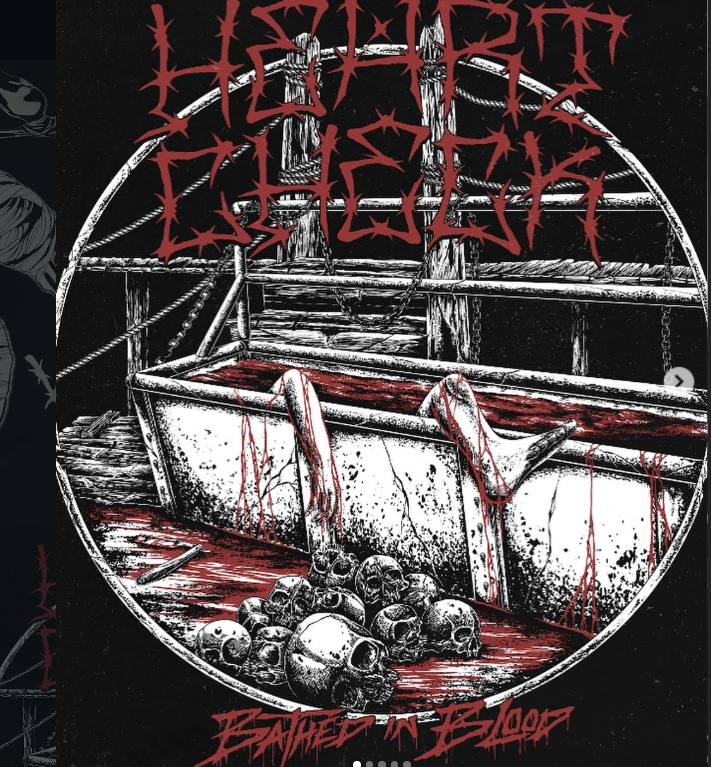

Red Brain
Original crimson and black
OPEN TEMPLATE →
Blood & Barbed Wire
Dark horror-metal artwork
OPEN TEMPLATE →
Moral Decay
Ash gray and white
OPEN TEMPLATE →
I Wear Myself
Blue and magenta
OPEN TEMPLATE →
Reference Style
Reference-style layout
OPEN TEMPLATE →
Kublai-Inspired
Centered concert-site layout
OPEN TEMPLATE →
Merch Concept
Six mock merchandise products
OPEN TEMPLATE →